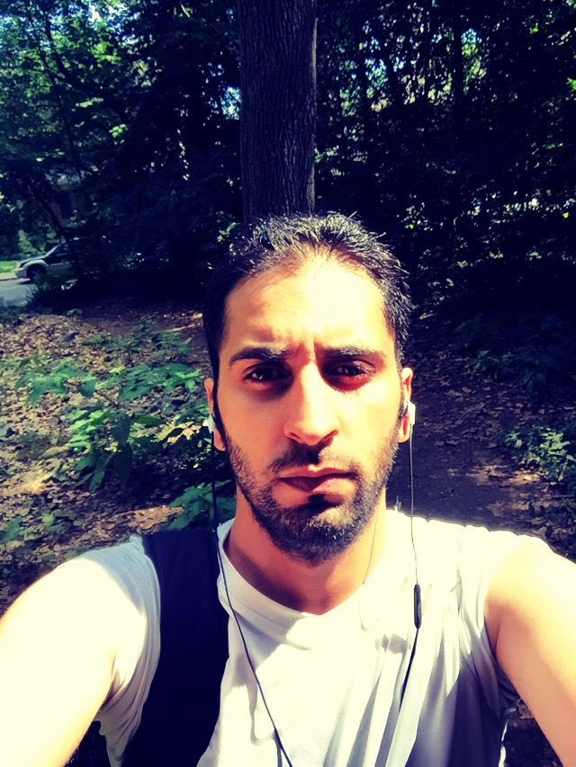

Background info
Faisal Albellaihi
falbellaihi@hotmail.com
Education
Bachelor Degree of Computer Science – University Of Mary Washington
Technical Skills
- C++
- C
- JAVA
- SWIFT
- python
- Django
- prime faces
- Unity
- Unreal Engine
- Unreal Blueprints
Certifications
- Microsoft Devops Practices and principles
- Microsoft Devops Infrastructure as code
Certifications
- MITS HR management(JAVA)
- Pitch Perfect (Swift)
- Meme Me(Swift)
- Saudi Polish (Python)

As a developer I am always striving to develop and find new
challenges. I want to gain deeper knowledge within software
development and complex solutions this is my passion as a
developer.
As a developer I am always striving to develop and find new
challenges. I want to gain deeper knowledge within software
development and complex solutions this is my passion as a
developer.
As a person I am team player and have strong abilities to
act
both
on operational and strategical level. I am social and good
with
motivating other cooperate and drive my tasks towards set
targets.
As a developer I have gained a wide experience in software
development and IT within the last few years. Good customer
contacts and service spirit are some of the things which
that
characterize me as a person.
It’s not a faith in technology. It’s faith in people.Steve Jobs